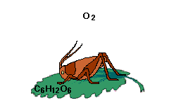

We sometimes refer to our breathing as "respiration." Other organisms, including the cricket below, have different mechanisms for exchanging gases with the environment.
|
What are some processes in plants that require ATP?
|
 Closer Look |
 |
To see how gas exchange is linked to cellular respiration, let's take a closer look. ATP is generated in the mitochondria during cellular respiration. It powers most cellular processes that require energy; one example is muscle contraction.
Click the cricket to see cellular respiration in a muscle cell.
 Continue to Design of the Experiment.
Continue to Design of the Experiment.